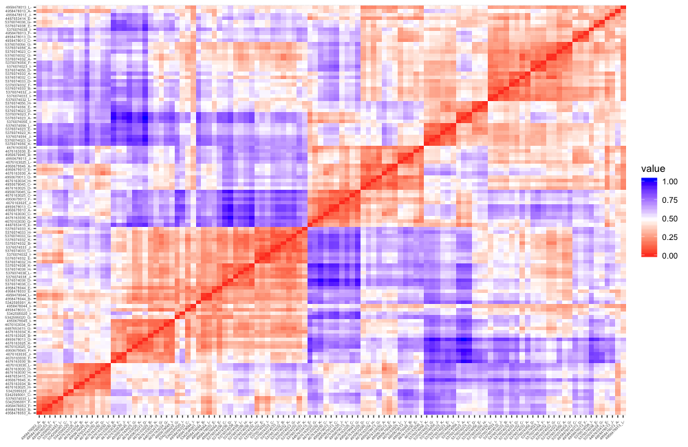
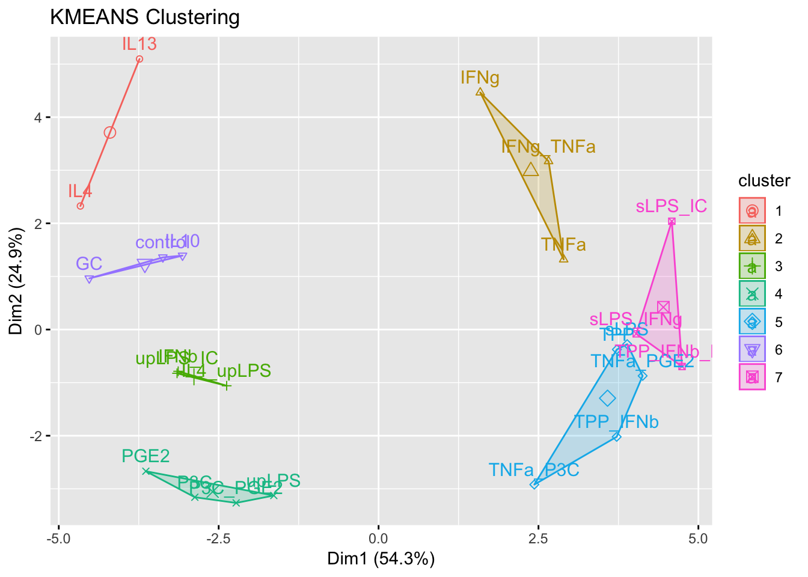
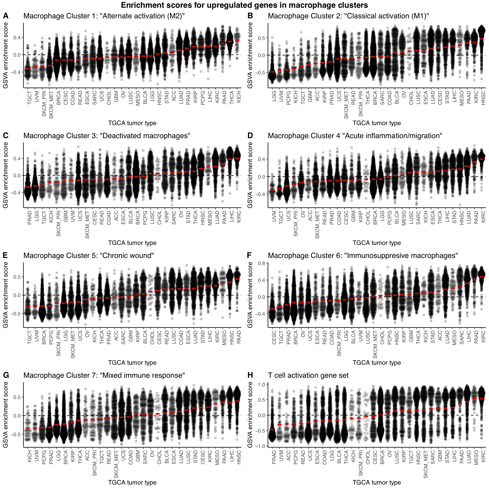
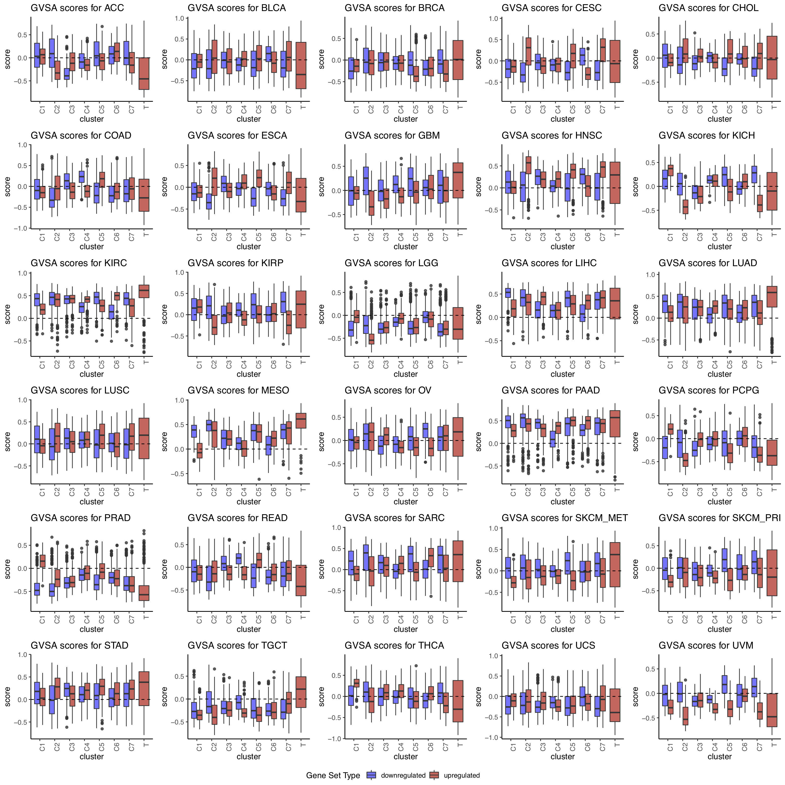

Last updated: 2019-11-09
Checks: 2 0
Knit directory: tcga_macs/
This reproducible R Markdown analysis was created with workflowr (version 1.5.0). The Checks tab describes the reproducibility checks that were applied when the results were created. The Past versions tab lists the development history.
Great! Since the R Markdown file has been committed to the Git repository, you know the exact version of the code that produced these results.
Great! You are using Git for version control. Tracking code development and connecting the code version to the results is critical for reproducibility. The version displayed above was the version of the Git repository at the time these results were generated.
Note that you need to be careful to ensure that all relevant files for the analysis have been committed to Git prior to generating the results (you can use wflow_publish or wflow_git_commit). workflowr only checks the R Markdown file, but you know if there are other scripts or data files that it depends on. Below is the status of the Git repository when the results were generated:
Ignored files:
Ignored: .DS_Store
Ignored: .Rhistory
Ignored: .Rproj.user/
Ignored: all.pdf
Ignored: analysis/.DS_Store
Ignored: data/.DS_Store
Ignored: data/160genes_ensembl.gencode28.txt
Ignored: data/GSE46903_Affymetrix_Reanalyzed_data.txt.gz
Ignored: data/GSE46903_Affymetrix_metadata.txt.gz
Ignored: data/GSE46903_RAW.tar
Ignored: data/GSE46903_non-normalized.txt
Ignored: data/gencode.v22.primary_assembly.annotation.gtf.geneinfo
Ignored: data/gse_46903.rds
Ignored: data/htseq_counts/
Ignored: data/kyle.gdc_tcga_bam_metadata.txt
Ignored: output/AUC_comparison.pdf
Ignored: output/Combined_down_plots.pdf
Ignored: output/Combined_up_plots.pdf
Ignored: output/Fig1.png
Ignored: output/PFS_CoxPH.pdf
Ignored: output/Rplot.pdf
Ignored: output/arrange.pdf
Ignored: output/ave_scores_gsva_by_tumor.rds
Ignored: output/beeswarm_plot.pdf
Ignored: output/beeswarm_pub.pdf
Ignored: output/boxplot_total_pub.pdf
Ignored: output/combined_boxplots.pdf
Ignored: output/combined_up_plot.pdf
Ignored: output/coxph_pfs.pdf
Ignored: output/cpxph_os.pdf
Ignored: output/cv.lasso.merck.rds
Ignored: output/cv.lasso.rds
Ignored: output/dge_frame.csv
Ignored: output/downreg_c1.csv
Ignored: output/downreg_c2.csv
Ignored: output/downreg_c3.csv
Ignored: output/downreg_c4.csv
Ignored: output/downreg_c5.csv
Ignored: output/downreg_c6.csv
Ignored: output/downreg_c7.csv
Ignored: output/expr_matrix.csv
Ignored: output/expr_matrix.rds
Ignored: output/expression_set.rds
Ignored: output/figures/
Ignored: output/filtered.total.phenodata.csv
Ignored: output/filtered.total.phenodata.rds
Ignored: output/flat_total_counts.rds
Ignored: output/flat_total_pheno.rds
Ignored: output/gset_ids_complete.rds
Ignored: output/gset_ids_plusnew.rds
Ignored: output/heatmaps_fig3.pdf
Ignored: output/hm_chol.pdf
Ignored: output/imtx_expressionset.rds
Ignored: output/imtx_gsva_17geneset_results.rds
Ignored: output/imtx_matrix.csv
Ignored: output/km_cluster_assignments.csv
Ignored: output/lasso.min.model.merck.rds
Ignored: output/lasso.min.model.rds
Ignored: output/lasso.test.data.merck.rds
Ignored: output/lasso.test.data.rds
Ignored: output/lasso.train.data.merck.rds
Ignored: output/lasso.train.data.rds
Ignored: output/mac_eset.rds
Ignored: output/mac_eset_w_clusters.rds
Ignored: output/nested_list_dge_top50_updown.rds
Ignored: output/normalized_probe_intensities.Rds
Ignored: output/os_km_curves.pdf
Ignored: output/os_km_plots.pdf
Ignored: output/processed_lumi_46903.Rds
Ignored: output/processed_lumi_46903.tsv
Ignored: output/processed_lumi_exprs.txt
Ignored: output/pub_boxplot.pdf
Ignored: output/score_matrix.csv
Ignored: output/selected.total.counts.csv
Ignored: output/summary heatmap.pdf
Ignored: output/table_c1.csv
Ignored: output/table_c2.csv
Ignored: output/table_c3.csv
Ignored: output/table_c4.csv
Ignored: output/table_c5.csv
Ignored: output/table_c6.csv
Ignored: output/table_c7.csv
Ignored: output/tcga_counts_dataframe_list.rds
Ignored: output/tcga_counts_list.rds
Ignored: output/tcga_gdc_manifest.rds
Ignored: output/tcga_gsva_17geneset_results.rds
Ignored: output/tcga_metadata_list.rds
Ignored: output/tcga_total_counts.csv
Ignored: output/univariate_p_values.pdf
Ignored: output/upreg_c1.csv
Ignored: output/upreg_c2.csv
Ignored: output/upreg_c3.csv
Ignored: output/upreg_c4.csv
Ignored: output/upreg_c5.csv
Ignored: output/upreg_c6.csv
Ignored: output/upreg_c7.csv
Untracked files:
Untracked: analysis/expanded_gsva.Rmd
Untracked: analysis/expanded_gsva_analysis.Rmd
Untracked: analysis/gsva_results_exploration.Rmd
Untracked: analysis/survival.Rmd
Untracked: data/IMTX_datasets/
Untracked: data/xcel_signatures.xlsx
Untracked: output/PFS_CoxPH-concordance.tex
Untracked: output/PFS_CoxPH.Rnw
Untracked: output/PFS_CoxPH.log
Untracked: output/PFS_CoxPH.synctex.gz
Untracked: output/PFS_CoxPH.tex
Untracked: output/Rplot01.png
Untracked: output/coxph_pfs-concordance.tex
Untracked: output/coxph_pfs.Rnw
Untracked: output/coxph_pfs.log
Untracked: output/coxph_pfs.synctex.gz
Untracked: output/coxph_pfs.tex
Untracked: output/cpxph_os-concordance.tex
Untracked: output/cpxph_os.Rnw
Untracked: output/cpxph_os.log
Untracked: output/cpxph_os.synctex.gz
Untracked: output/cpxph_os.tex
Untracked: output/univariate_p_values-concordance.tex
Untracked: output/univariate_p_values.Rnw
Untracked: output/univariate_p_values.log
Untracked: output/univariate_p_values.synctex.gz
Untracked: output/univariate_p_values.tex
Unstaged changes:
Modified: .gitignore
Modified: analysis/ss_gsea.Rmd
Modified: analysis/tcga_format.Rmd
Note that any generated files, e.g. HTML, png, CSS, etc., are not included in this status report because it is ok for generated content to have uncommitted changes.
These are the previous versions of the R Markdown and HTML files. If you’ve configured a remote Git repository (see ?wflow_git_remote), click on the hyperlinks in the table below to view them.
| File | Version | Author | Date | Message |
|---|---|---|---|---|
| Rmd | c9fa79d | mleukam | 2019-11-09 | wflow_publish(“analysis/index.Rmd”) |
| html | 0188666 | mleukam | 2019-06-25 | Build site. |
| Rmd | 202b4f4 | mleukam | 2019-06-25 | added link to GSVA results exploration |
| html | dd3f227 | mleukam | 2019-06-15 | Build site. |
| Rmd | 66464db | mleukam | 2019-06-15 | updates to homepage |
| html | 4f63f2c | mleukam | 2019-06-13 | Build site. |
| Rmd | 499940d | mleukam | 2019-06-13 | minor text update |
| html | 08836cd | mleukam | 2019-06-13 | Build site. |
| Rmd | 9b1985d | mleukam | 2019-06-13 | added summary images |
| html | 8f7d684 | mleukam | 2019-06-10 | Build site. |
| Rmd | 5648679 | mleukam | 2019-06-10 | updates after new TCGA format notebook |
| html | db31ea4 | mleukam | 2019-06-09 | Build site. |
| Rmd | e32a267 | mleukam | 2019-06-09 | update homepage |
| html | 788b028 | mleukam | 2019-06-05 | Build site. |
| Rmd | 25733dc | mleukam | 2019-06-05 | major updates including clustering and correlation |
| html | eeb1301 | mleukam | 2019-05-08 | Build site. |
| Rmd | 3ff66a4 | mleukam | 2019-05-08 | rename and update preprocessing notebook, update index links |
| html | 7d58100 | mleukam | 2019-04-14 | Build site. |
| Rmd | 9e17495 | mleukam | 2019-04-14 | update home page |
| html | 9891f0d | mleukam | 2019-04-14 | Build site. |
| Rmd | 2957568 | mleukam | 2019-04-14 | update home page |
| html | 94fdc7e | mleukam | 2019-04-11 | Build site. |
| Rmd | d8458b9 | mleukam | 2019-04-11 | major updates to mac dge including subsets, updates to index |
| html | 363b5df | mleukam | 2019-04-09 | Build site. |
| Rmd | 9910c1d | mleukam | 2019-04-09 | Change the theme |
| html | 70f9e01 | mleukam | 2019-04-09 | Build site. |
| Rmd | 17f3020 | mleukam | 2019-04-09 | beginning the text on the homepage |
| html | bae7e19 | mleukam | 2019-04-09 | Build site. |
| Rmd | 3428b49 | mleukam | 2019-04-09 | Start workflowr project. |
Welcome to the lab notebook for our research project describing the distribution of macrophage gene signatures across various tumor types in The Cancer Genome Atlas (TCGA) data.
A T cell inflamed signature has been defined and described across tumor types in TCGA that corresponds to response to T cell directed immunotherapy. Is there a similar signature for macrophages that might predict the tumors most likely to respond to macrophage-directed immunotherapy? One challenge has been the diversity and plasticity of activated macrophage states compared to cytotoxic T cells. This project will use experimentally derived activation gene signatures for a range of macrophage subtypes and use high dimensional clustering to computationally define macrophage subsets. The distribution of these subsets will then be examined in multiple tumor types in TCGA data.
Derived differential gene expression sets for each of a number of experimentally derived macrophage states compared to monocytes for downstream analyses. The original data is obtained from GEO, ID=GSE46903.
Dissimilarity matrix showing correlation scores among samples:

K-means clustering of treatment groups based on Pearson correlation coefficients (k =7):

Apply gene lists from above to TCGA pancancer bulk RNAseq counts data
Figure 1: derivation of macrophage signatures:
Figure 2: Beeswarm plots of upregulated macrophage cluster genes applied to TCGA data:

Figure 2B: Boxplots for selected tumor types showing GSVA score for each cluster and T-cell inflammation signature:

Figure 3: Heatmaps of selected tumor types
Figure 4: IMTX survival/outcomes